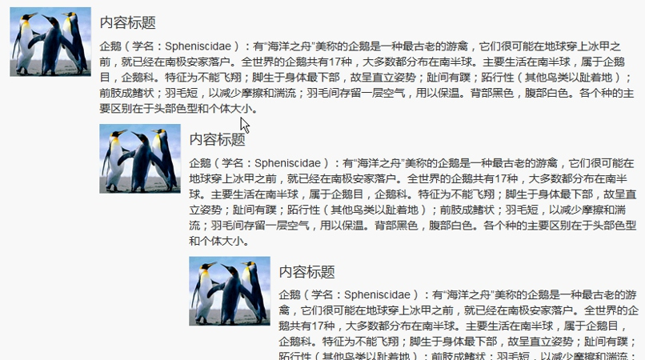

这个组件可以实现简单的嵌入效果。
//嵌入效果
<div class="well">
Bootstrap
</div>
//有 lg 和 sm 两种可选值
<div class="well well-lg">
Bootstrap
</div>
进度条组件为当前工作流程或动作提供时时反馈。
//基本进度条
<div class="progress">
<div class="progress-bar" style="width: 60%;">60%</div>
</div>
//最低值进度条
<!--
0%时看不清要显示的文字,所以我们给个最小的进度.以展示文字.注意min-width不会引响进度显示.
-->
<div class="progress">
<div class="progress-bar" style="min-width:20px">0%</div>
</div>
//结合情景的进度条
<div class="progress">
<div class="progress-bar progress-bar-success" style="min-width:20px;width:60%">60%</div>
</div>
//条纹状，IE10+支持
<!-- progress-bar-striped 斑马线-->
<div class="progress">
<div class="progress-bar progress-bar-success progress-bar-striped" style="min-width:20px;width:60%">60%</div>
</div>
//动画效果
<!-- progress-bar-striped 斑马线 只要它才能有动画效果 active就行了.-->
<div class="progress">
<div class="progress-bar progress-bar-success progress-bar-striped active" style="min-width:20px;width:60%">60%</div>
</div>
//堆叠效果
<div class="progress">
<div class="progress-bar progress-bar-success" style="min-width:20px;width:35%">35%</div>
<div class="progress-bar progress-bar-warning" style="min-width:20px;width:20%">20%</div>
<div class="progress-bar progress-bar-danger" style="min-width:20px;width:10%">10%</div>
</div>
媒体对象可以包含图片、视频或音频等媒体，以达到对象和文本组合显示的样式效果。
//基本实例
<!--
1.写一<div class="media">容器.
2.里面内容分左边与主要内容.常用于论坛,留言等.我左边(media-left)用的是图片,为了控制大小,我用了缩略图功能,但为了显示出来.限制了最小宽度,注意左边还可以media-top,media-middle,media-bottom来控制垂直对齐,右边是主要内容区域.
3.注意,文本并不是环绕图片.而是一个在左,一个在右.
-->
<div class="media">
<div class="media-left">
<img src="img/Desert.jpg" class="img-thumbnail" style="min-width: 300px;" alt="" class="media-object">
</div>
<div class="media-body">
<h4 class="media-heading">标题</h4>
<p>企鹅（学名：Spheniscidae）：有“海洋之舟”美称的企鹅是一种最古老 的游禽，它们很可能在地球穿上冰甲之前，就已经在南极安家落户。全世界的企鹅共有 17 种，大多数都分布在南半球。主要生活在南半球，属于企鹅目，企鹅科。特征为不能飞翔； 脚生于身体最下部，故呈直立姿势；趾间有蹼；跖行性（其他鸟类以趾着地）；前肢成鳍状； 羽毛短，以减少摩擦和湍流；羽毛间存留一层空气，用以保温。背部黑色，腹部白色。各个 种的主要区别在于头部色型和个体大小。
</p>
</div>
</div>
//媒体对象在右边
<!--
1.把<div class="media-left">改成<div class="media-right"> 但它只是过去了一点点.
2.把<div class="media-right">放到<div class="media-body">的后面去.就行了.
-->
<div class="media">
<div class="media-body">
<h4 class="media-heading">标题</h4>
<p>企鹅（学名：Spheniscidae）：有“海洋之舟”美称的企鹅是一种最古老
的游禽，它们很可能在地球穿上冰甲之前，就已经在南极安家落户。全世界的企鹅共有 17
种，大多数都分布在南半球。主要生活在南半球，属于企鹅目，企鹅科。特征为不能飞翔；
脚生于身体最下部，故呈直立姿势；趾间有蹼；跖行性（其他鸟类以趾着地）；前肢成鳍状；
羽毛短，以减少摩擦和湍流；羽毛间存留一层空气，用以保温。背部黑色，腹部白色。各个
种的主要区别在于头部色型和个体大小。</p>
</div>
<div class="media-right">
<img src="img/small.png" alt="" class="media-object">
</div>
</div>
//媒体对象列表:主要是评论,回贴功能.
<!--
<ul class="media-list">
<li class="media">
将每个 media 存放在 media-body 内后即可,可多层嵌套
...代码较多,此处省略,把li改成div
</li>
</ul>
-->
<div class="media-list">
<div class="media">
<div class="media-left">
<img src="img/Desert.jpg" class="img-thumbnail" style="min-width: 200px;" alt="" class="media-object">
</div>
<div class="media-body">
<h4 class="media-heading">标题</h4>
<p>企鹅（学名：Spheniscidae）：有“海洋之舟”美称的企鹅是一种最古老 的游禽，它们很可能在地球穿上冰甲之前，就已经在南极安家落户。全世界的企鹅共有 17 种，大多数都分布在南半球。主要生活在南半球，属于企鹅目，企鹅科。特征为不能飞翔； 脚生于身体最下部，故呈直立姿势；趾间有蹼；跖行性（其他鸟类以趾着地）；前肢成鳍状； 羽毛短，以减少摩擦和湍流；羽毛间存留一层空气，用以保温。背部黑色，腹部白色。各个 种的主要区别在于头部色型和个体大小。
</p>
<!-- ========嵌套内容:start============= -->
<div class="media">
<div class="media-left">
<img src="img/Desert.jpg" class="img-thumbnail" style="min-width: 200px;" alt="" class="media-object">
</div>
<div class="media-body">
<h4 class="media-heading">标题</h4>
<p>企鹅（学名：Spheniscidae）：有“海洋之舟”美称的企鹅是一种最古老 的游禽，它们很可能在地球穿上冰甲之前，就已经在南极安家落户。全世界的企鹅共有 17 种，大多数都分布在南半球。主要生活在南半球，属于企鹅目，企鹅科。特征为不能飞翔； 脚生于身体最下部，故呈直立姿势；趾间有蹼；跖行性（其他鸟类以趾着地）；前肢成鳍状； 羽毛短，以减少摩擦和湍流；羽毛间存留一层空气，用以保温。背部黑色，腹部白色。各个 种的主要区别在于头部色型和个体大小。
</p>
</div>
</div>
<!-- =========嵌套内容:end=========== -->
</div>
</div>
</div>